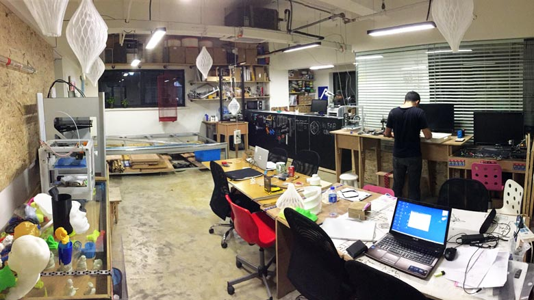

ABOUT
XinFab is a FabLab effort grown out of the necessity of the hacker/makers community.
XinFab now is in expansion.
Right now, XinFab is located within the heart of Shanghai and has on site a laser cutter, a CNC machine, TIG and Spot Welders, over 10 3D printers, a hydraulic press, a lathe, and a diverse assortment of power tools.
- NON PROFIT ORGANIZATION
- MAKER COMMUNITY
- FABRICATION LAB
- XINFAB
- LUCIO
- STAFF

We are located at Hero Center, which is facilitated by PEOPLE2.
Besides having our own working space there is also access to a cafeteria and meeting rooms.
ENTRANCE
CAFETERIA
MEETING ROOM